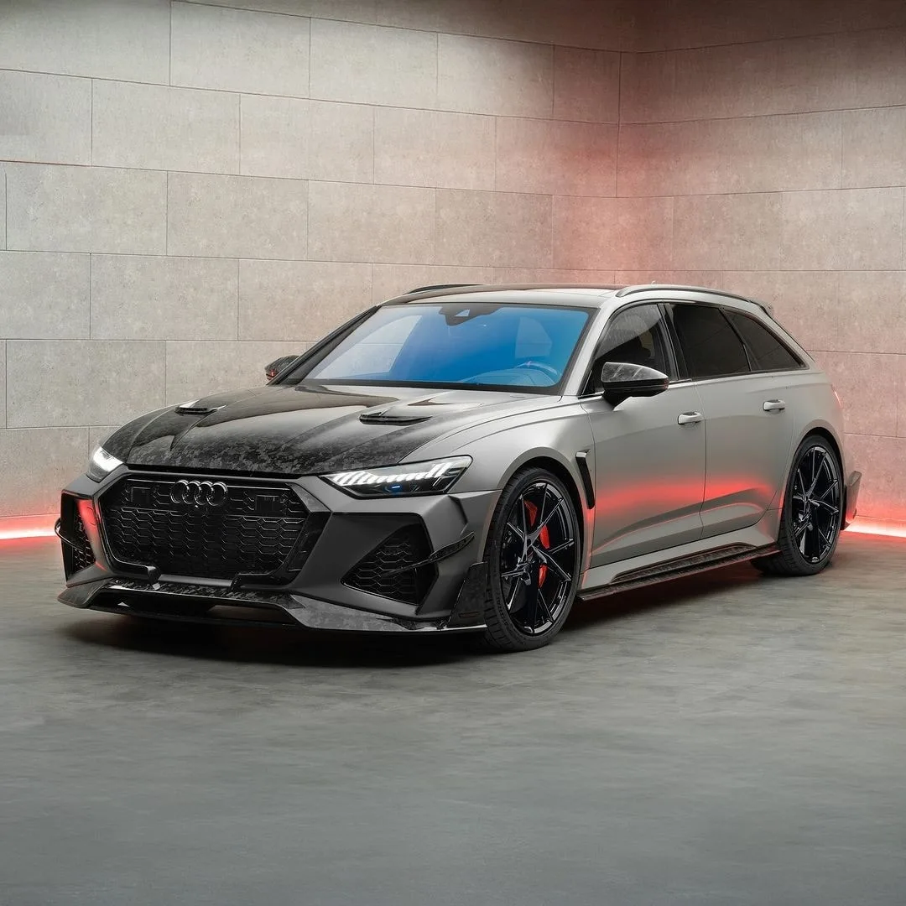

Audi RS6 Avant

Audi RS6 — спортивный автомобиль, выпускаемый подразделением Audi Sport GmbH (ранее quattro GmbH) на платформе Audi A6
Характеристики
| Параметр | Значение |
|---|---|
| Двигатель | 4.0 л V8 TFSI, Twin-Turbo (гибридная система MHEV) |
| Мощность | ≈ 600 л.с |
| 0-100 км/ч | ≈ 3.6с |
| Привод | полный |